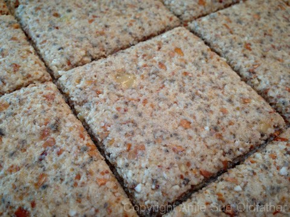
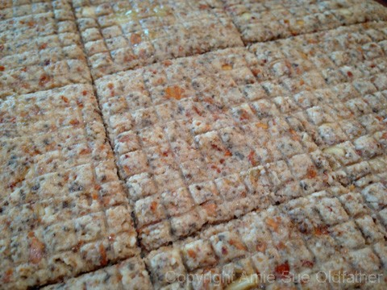
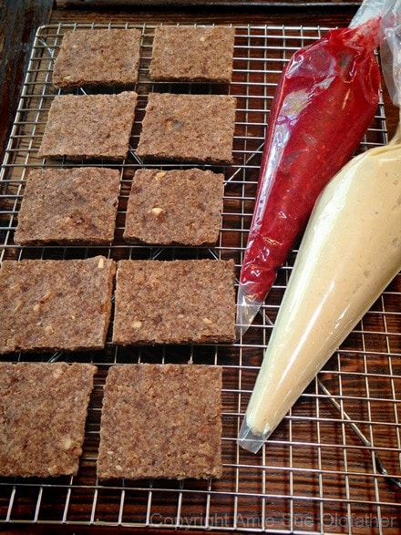
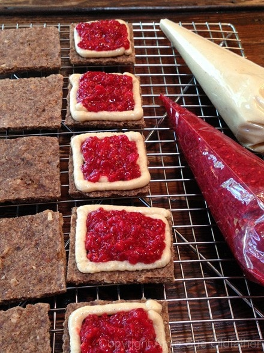
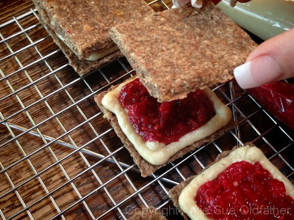
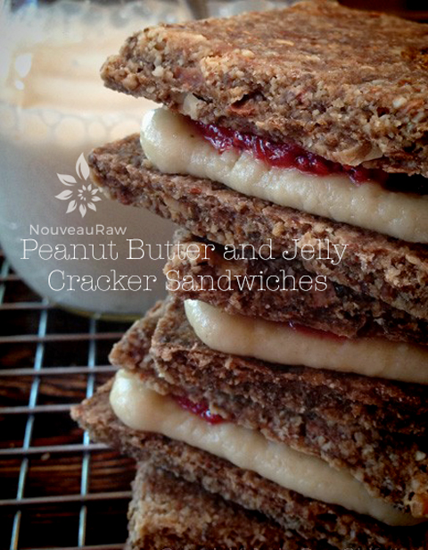

Peanut Butter and Jelly Cracker Sandwiches

~ raw, vegan, gluten-free ~
This is my play on peanut butter and jelly sandwiches, dessert style. It wasn’t my intent to create a completely raw version of the bread, peanut butter, and jelly… it was more about the flavors.
My dear friend, Gina, is going to be hosting a gathering of colleges Saturday morning and wanted to supply some snacks that fit somewhere right in between breakfast and lunch foods. So, I thought I would create some peanut butter crackers and a berry jam for them as part of their snacks. I mean, who doesn’t like peanut butter and jelly?
I quickly wanted to give a shout-out to our guest appearance on this recipe posting today… drumroll please… my right hand! (see below) ‘and the crowd goes wild’ Yes folks, you never see my right hand in my photos… as I am a lefty. But a few days ago my husband came home with a surprise for me… it was a really cool micro planer!
A new kitchen tool! I put that darn thing to use that very afternoon. But, in my attempt to remove the “safety cover,” I grated the heck out of my left thumb. lol. I took a picture of blood running down my hand and texted it to my husband… “The grater works wonderfully honey, thank you hehe” It is going to bandaged up for a bit, so during this time, I am really trying hard to ambidextrous. :)
Let’s get back to our treat here. These crackers are amazing all on their own. They are sturdy, crunchy, and rich in peanut butter and banana flavor. I decided to sandwich in some fresh raw honey peanut butter that Bob and I made, along with a vibrant red layer of Strawberry Raspberry Jelly. If you are allergic to peanut butter, you could use almond butter in its place. This is a wonderful treat that will satisfy both the belly and heart.
Ingredients:
Yields 36 crackers
Crackers:
- 3 cups packed, moist almond pulp
- 1 1/2 cups mashed banana, (2 bananas)
- 1 cup natural peanut butter
- 1/2 cup ground chia seeds
- 1/4 cup maple syrup
- 1/2 Tbsp vanilla extract
- 1 Tbsp ground cinnamon
- 1/4 tsp Himalayan pink salt
Jelly: yields 1 1/2 cups
- 1 cup organic strawberries
- 1 cup organic raspberries
- 1 Tbsp chia seeds
- 1 Tbsp maple syrup
- 1 tsp lemon juice
- dash Himalayan pink salt
Peanut butter layer:
- 1 cup natural peanut butter
Preparation:
Cracker:
- In a large bowl combine the almond pulp, banana, peanut butter, ground chia seeds, maple syrup, vanilla, cinnamon, and salt.
- Remove all jewels from your hands and dive in. Mix everything together really well.
- Spread the batter out onto the teflex sheet that comes with the dehydrator.
- I have an Excalibur machine, I used one tray, spreading the batter from one edge to the other.
- Use a spatula to spread it nice and evenly, dipping it in water every once in a while, so the batter doesn’t stick.
- Score into desired sizes. I found a ruler in my
husband’s toolbox drawer that is 18″ long. Perfect for scoring!
- Dehydrate at 145 degrees (F) for 1 hour, then reduce to 115 (F) degrees for 5 hours.
- Flip the tray over onto another that has the mesh sheet only.
- Peel the teflex sheet off and return to the dehydrator for another 8 hours or until dry.
- Snap apart on the score lines and place in an airtight container. Stored on the counter, it will last 5-7 days. Fridge – 2-3 weeks. Freezer – 1-2 months.
Jam:
- In the blender or food processor, combine the strawberries, raspberries, chia seeds, maple syrup, lemon juice, and salt. Process until creamy. Set aside for 15 minutes for the chia to thicken.
- I placed the jam and peanut butter in piping bags for the ease of spreading on the crackers.
- To make the sandwich, just layer on the peanut butter and jelly. Chill in the fridge for a few hours to firm it up a bit. This will help prevent the inside goodness from oozing out when you take a bite.
Culinary Explanations:
- Why do I start the dehydrator at 145 degrees (F)? Click (here) to learn the reason behind this.
- When working with fresh ingredients, it is important to taste test as you build a recipe. Learn why (here).
- Don’t own a dehydrator? Learn how to use your oven (here). I do however truly believe that it is a worthwhile investment. Click (here) to learn what I use.

Because I can’t help myself, I took my silicone oven pad which is loaded with tiny squares and
pressed it on the part of my cracker dough to see if you would leave a pattern… yep it did. haha





© AmieSue.com